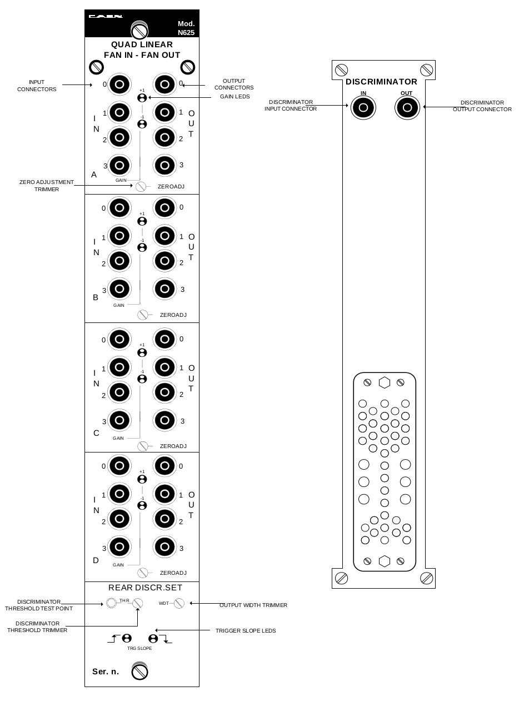
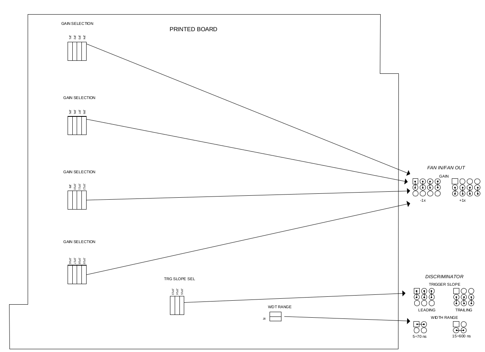

CAEN N625 Quad Linear Fan In/Fan Out
说明书 N625
 
The Mod. N625 is a 1-unit NIM module which houses:
- Four linear 4 Input + 4 Output Fan in/Fan out sections
- One 1 Channel Discriminator
Each Fan in/Fan out section produces on all its output connectors, the sum of the signals fed to the inputs, multiplied for the selected gain factor (1 or -1, jumper selectable). Gain = 1 (non inverting mode) and gain = -1 (inverting mode) are signalled by LEDs.
Fan in/Fan out inputs are bipolar, both input and output signals are DC coupled.
Moreover each Fan in/Fan out section features a screwdriver trimmer which allows the DC offset (“zero”) adjustment.
The discriminator channel has one DC coupled input, an internal jumper allows to perform the slope coupling on either the leading or the trailing edge; the threshold is screwdriver adjustable and monitorable via test point; the output is NIM standard, its width is screwdriver adjustable as well.
The discriminator In/Out connectors are placed on the back panel, while its controls are on the front panel.
Fan in/Fan out sections
- INPUT CONNECTORS
- Mechanical specifications: Front panel LEMO 00 type connectors
- Electrical specifications: Bipolar, DC coupled, 50 Ω impedance
- OUTPUT CONNECTORS
- Mechanical specifications: Front panel LEMO 00 type connectors
- Electrical specifications: DC coupled, provided across 50 Ω loads
- ZERO TRIMMER
- Mechanical specifications: Front panel screwdriver trimmer
- Function: Allows to adjust the output DC offset within a ±100 mV range
- DISPLAYS
- Gain LEDs: 2 Front panel LEDs per section: green: Gain=-1; yellow: Gain=+1.
- INTERNAL JUMPERS
- Gain jumper: allows to set gain either at +1 or at -1
- Max. input amplitude ±1.6 V
- DC offset (Zero) adjustment ±100 mV
- Input reflection <4%
- Integral non-linearity < 1%
- Input/output delay 4 ± 1 ns
Discriminator
- INPUT CONNECTOR
- Mechanical specifications: Back panel LEMO 00 type connector
- Electrical specifications: Bipolar, DC coupled, 50 Ω impedance
- OUTPUT CONNECTOR
- Mechanical specifications: Back panel LEMO 00 type connector
- Electrical specifications: Std. NIM level, provided across a 50 Ω load
- WIDTH TRIMMER
- Mechanical specifications: Front panel screwdriver trimmer
- Function: Allows to adjust the output pulse width in the 5÷70 ns/15÷600 ns ranges, jumper selectable
- THRESHOLD TRIMMER
- Mechanical specifications: Front panel screwdriver trimmer
- Function: Allows to adjust the discriminator threshold in the -1200÷+1200 mV range; one test–point allows to monitor the threshold value
- DISPLAYS
- Trigger slope LEDs: 2 Front panel LEDs; the relevant LED lights up according to the trigger
- slope setting: green: Trailing edge; yellow: Leading edge
- INTERNAL JUMPERS
- Trigger slope jumper: allows to set the trigger slope either to leading or to trailing edge
- Width range jumper: allows to select the output width range between 5÷70 ns and 15÷600 ns
- Max. input voltage ± 5V
- Min. detectable signal ± 10 mV
- Max. input frequency 90 MHz
- Double pulse resolution 11 ns
- Input/output delay 11 ns
- Output rise/fall time 1 ns